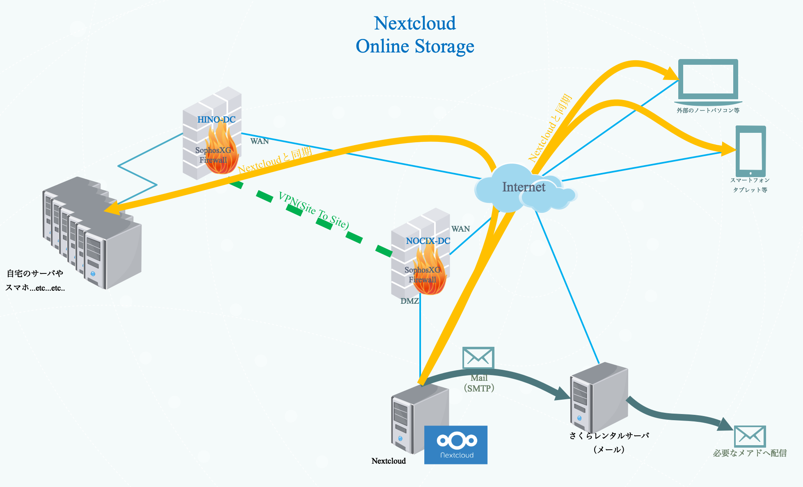

オンラインストレージ(Nextcloud)
オンラインストレージ設計概要

オンラインストレージは、インターネットに接続されているパソコンやスマートフォン等からデータの保存、読み出しが出来るサービスである。
また、本システムで採用するオンラインストレージは保管したデータをシステムへの登録不要かつセキュリティにも留意し第３者と共有する機能も必要とする。
結果、本システムで導入するオンラインストレージを提供するソフトウェアとしてNextcloudを採用した。
サーバはNOCIX拠点に借りている専用サーバ上に仮想マシンとして構築し、自宅のサーバへ日時バックアップを作成する。
RainLoop(Webメール)
管理画面
【全般】インターフェイス
| 項目 |
値 |
| 言語 |
日本語 |
| 言語（管理画面） |
日本語 |
| テーマ |
Default |
| 設定画面で言語選択を使用する |
checked |
| 設定画面でテーマ選択を使用する |
checked |
| 設定画面で背景選択を使用する |
|
| 新しい"フォルダへ移動"ボタン |
checked |
| サムネイルを表示（添付ファイル） |
checked |
| Gravatar を使用する |
checked |
【全般】メイン
| 項目 |
値 |
| 添付ファイルサイズ制限 |
25MB |
| 追加のアカウントを使用する |
checked |
| 複数の表示名を使用する |
checked |
【ドメイン】ドメイン
| 項目 |
値 |
備考 |
| k636174.sakura.ne.jp |
checked |
|
| k636174.net(alias) |
checked |
k636174.sakura.ne.jpのエイリアス |
【ドメイン】k636174.sakura.ne.jp
IMAP欄の値について下記に示す。
| 項目 |
値 |
| サーバー |
k636174.sakura.ne.jp |
| ポート |
143 |
| セキュリティ |
STARTTLS |
| 短いログイン名を使う |
- |
【ドメイン】k636174.sakura.ne.jp
SMTP欄の値について下記に示す。
| 項目 |
値 |
| サーバー |
k636174.sakura.ne.jp |
| ポート |
587 |
| セキュリティ |
STARTTLS |
| 短いログイン名を使う |
- |
| 認証を使用する |
checked |